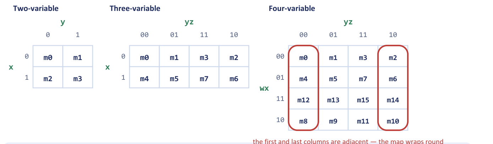
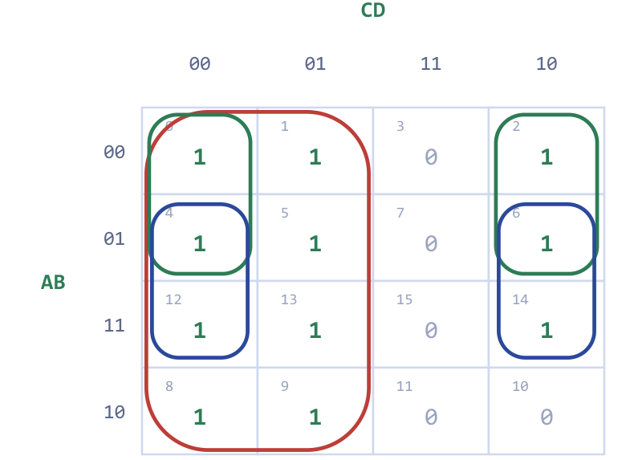
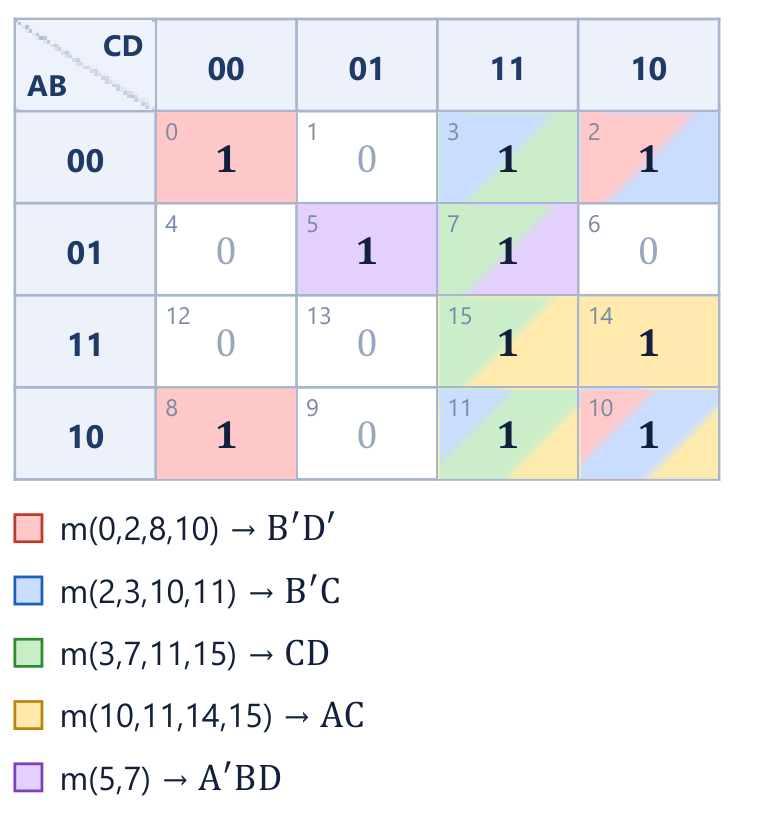
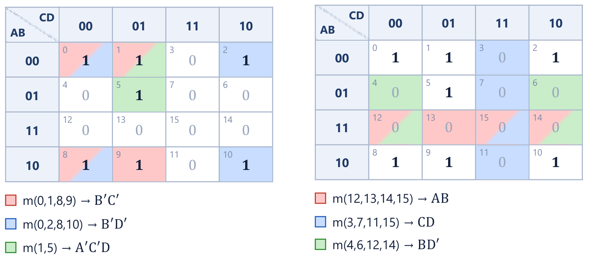
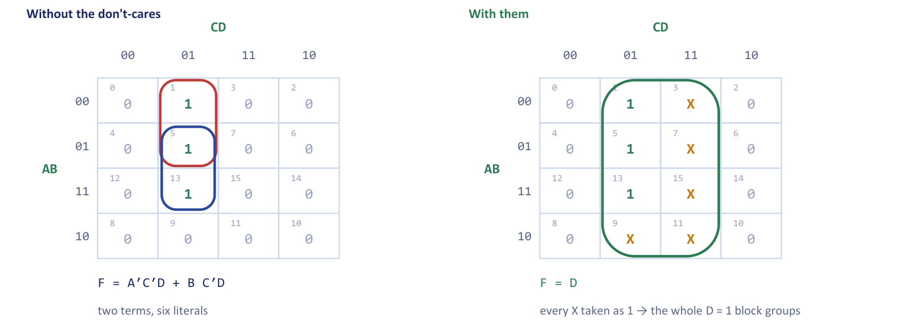
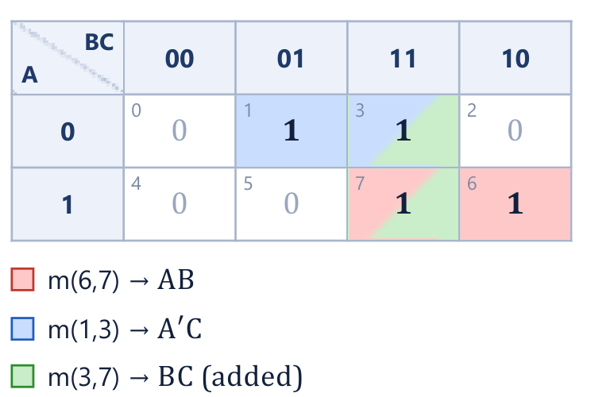

Chapter 2: Karnaugh Maps and Minimisation¶
Simplification you can see: adjacency, grouping, don't-cares and the one case where "minimal" is not safe
In the previous chapter we learned that an expression can often be made smaller without changing the function it computes, and that every gate removed is cost, power and delay saved. The algebraic route works, but it demands that you notice which theorem applies next, and there is no guarantee that you have reached the smallest answer when you stop. A Karnaugh map (K-map) replaces that guesswork with pattern recognition. It is simply a truth table redrawn so that the pairs of terms which algebra would combine are always physical neighbours, and so a good simplification can be read off by eye.
This chapter develops the map for two, three and four variables, states the grouping rules and shows how a minimal sum of products (SOP) is read from the groups. We then see how the same map gives a product of sums (POS) when we group the zeros, how don't-care conditions give simplification for free, and what prime and essential prime implicants are. For more than four variables we outline the paired-map idea and the tabular Quine-McCluskey method. The chapter ends with a warning that a circuit that is minimal on paper may still glitch in practice, and how to cure it.
What you will learn
- Explain why the K-map columns follow Gray code and why the map wraps around.
- Minimise 2-, 3- and 4-variable functions to a minimal SOP using legal groups, and read off a minimal POS from the zeros.
- Find prime implicants and essential prime implicants, and recognise when a minimal cover is not unique.
- Use don't-care conditions to enlarge groups, and know the two mistakes to avoid.
- Outline the Quine-McCluskey method, and identify and remove a static-1 hazard using the consensus term.
2.1 Why a map instead of algebra¶
Algebraic simplification depends on spotting terms that differ in exactly one variable, because of the combining theorem
One variable disappears whenever two terms differ only in that variable. A Karnaugh map is a truth table arranged so that such pairs are always next to each other. Then two adjacent cells that both contain 1 can be merged and the variable that changes between them eliminated, and you can see this instead of having to spot it algebraically.
The map is practical up to four variables on a single sheet, and up to five or six with paired maps. It leads directly to a two-level circuit with the minimum number of gates and the minimum delay, and it handles don't-cares naturally, which algebra does not. Beyond six variables one turns to the tabular Quine-McCluskey method or a computer-aided design tool (Section 2.7).
2.2 Building the map¶
Figure 2.1 shows the maps for two, three and four variables. Each cell carries the number of its minterm. For a function of \((x, y)\) the cell index is \(2x + y\); for \((x,y,z)\) it is \(4x + 2y + z\); and for four variables \((w,x,y,z)\) it is \(8w + 4x + 2y + z\). In the rest of the chapter we call the variables \(A, B, C, D\), with \(A\) the most significant, so the minterm index of \(F(A,B,C,D)\) is \(8A + 4B + 2C + D\).

The row heading supplies the first variable (or first two variables) and the column heading the rest. For example, the cell with \(x = 1\) and \(yz = 01\) in the three-variable map is the minterm \(xy'z = m_5\).
The column order is not 00, 01, 10, 11
The columns (and, for four variables, the rows) are labelled 00, 01, 11, 10. This is Gray code, in which each step changes exactly one bit. That is the whole trick: because neighbours differ in exactly one variable, any two adjacent 1s can be merged. Writing the columns in plain binary counting order destroys adjacency, and every grouping you make afterwards will be wrong.
The map wraps around¶
Because the first and last entries of a Gray-code sequence also differ in exactly one bit (00 and 10), the left and right edges of the map are adjacent, and so are the top and bottom edges of a four-variable map. Think of the three-variable map as drawn on a cylinder and the four-variable map as drawn on a doughnut. In Figure 2.1 the highlighted columns \(m_0, m_4, m_{12}, m_8\) and \(m_2, m_6, m_{14}, m_{10}\) are neighbours, so the four corner cells \(m_0, m_2, m_8, m_{10}\) form a legal group of four.
Diagonal cells are not adjacent
Adjacency means sharing an edge, or wrapping round an edge. Cells that touch only at a corner are not adjacent. For example, \(m_3\) (\(0011\)) and \(m_6\) (\(0110\)) differ in two variables, \(B\) and \(D\), so they lie diagonally on the four-variable map and cannot be grouped as a pair. A pair on the map may combine only cells that differ in exactly one variable.
2.3 Grouping rules and reading a minimal SOP¶
Having plotted the 1s of the function, we cover them with groups according to the following rules.
- Group only 1s. Never include a 0 in a group (don't-cares are the one exception, Section 2.6).
- Groups are rectangles whose size is a power of two: 1, 2, 4, 8 or 16 cells, never 3, 5 or 6. They may wrap round the edges.
- Make every group as large as possible, because each doubling removes one more variable.
- Use as few groups as possible, because each group becomes one product term (one AND gate).
- Groups may overlap. A 1 that is already covered may be used again to enlarge another group.
- Every 1 must be covered at least once.
To read a group, look at which variables stay constant across every cell of the group. Those variables form the product term: a variable that is constantly 1 appears unprimed, one that is constantly 0 appears primed. Any variable that changes inside the group has been eliminated. Every doubling of the group removes exactly one literal, which is why the third rule matters more than any other. In a four-variable map a group of 1 cell gives a four-variable term, 2 cells give three variables, 4 cells two variables, 8 cells one variable, and 16 cells the constant 1.
The SOP is the OR of the product terms of all the groups. It is a minimal SOP when it uses the fewest product terms and, among those, the fewest literals.
Try the rules on a map of your own. Click the cells to set 1, 0 or X, and watch the groups and the minimal expression follow.
Example 2.1: A two-variable and a three-variable map
Problem. (a) Minimise \(F(A,B) = \sum m(1,3)\). (b) Minimise \(F(A,B,C) = \sum m(0,2,4,5,6)\).
Working. (a) The two-variable map has cells \(m_0 = A'B'\), \(m_1 = A'B\), \(m_2 = AB'\), \(m_3 = AB\). The 1s are in the column \(B = 1\).
| \(A \backslash B\) | 0 | 1 |
|---|---|---|
| 0 | 0 | 1 |
| 1 | 0 | 1 |
One group of two cells: \(A\) changes, \(B = 1\) is constant, so the term is \(B\).
(b) Plot the five 1s on the three-variable map (columns in Gray order \(BC = 00, 01, 11, 10\)):
| \(A \backslash BC\) | 00 | 01 | 11 | 10 |
|---|---|---|---|---|
| 0 | 1 | 0 | 0 | 1 |
| 1 | 1 | 1 | 0 | 1 |
The cells \(m_0, m_2, m_4, m_6\) (the columns \(BC = 00\) and \(BC = 10\), both rows) form a group of four because the edges wrap round. Throughout the group \(C = 0\), while \(A\) and \(B\) change, so the term is \(C'\). The remaining 1 is \(m_5\); its only partner is \(m_4\), giving the pair \(m_4, m_5\) in which \(A = 1\), \(B = 0\) are constant and \(C\) changes: the term \(AB'\).
Answer. (a) \(F = B\). (b) \(F = C' + AB'\). Both terms in (b) are essential: \(m_0\), \(m_2\) and \(m_6\) can be covered only by \(C'\), and \(m_5\) only by \(AB'\). A two-level AND-OR realisation needs one 2-input AND and one 2-input OR, against five 3-input ANDs and a 5-input OR before minimisation.
Example 2.2: A function with a large group
Problem. Minimise \(F(A,B,C) = \sum m(0,1,2,3,5,7)\).
Working. The whole top row \(A = 0\) (\(m_0, m_1, m_3, m_2\)) is a group of four in which \(B\) and \(C\) change and \(A = 0\) is constant: the term \(A'\). The cells \(m_1, m_3, m_5, m_7\) form the column pair \(C = 1\), a group of four in which \(A\) and \(B\) change and \(C = 1\) is constant: the term \(C\).
| \(A \backslash BC\) | 00 | 01 | 11 | 10 |
|---|---|---|---|---|
| 0 | 1 | 1 | 1 | 1 |
| 1 | 0 | 1 | 1 | 0 |
Answer. \(F = A' + C\). Each group is an essential prime implicant (\(m_0, m_2\) need \(A'\); \(m_5\) needs \(C\)).
The four-variable map¶
The four-variable map is where the method earns its keep. The following example is the standard one: eleven minterms reduce to three terms.
Example 2.3: A four-variable minimisation
Problem. Minimise \(F(A,B,C,D) = \sum m(0,1,2,4,5,6,8,9,12,13,14)\) with a four-variable K-map. Mark all prime implicants and state which are essential.
Working. The 0s of the function are the whole column \(CD = 11\) (\(m_3, m_7, m_{15}, m_{11}\)) and the cell \(m_{10}\). Figure 2.2 shows the map with the three groups used.

- Group 1: columns \(CD = 00\) and \(01\) in all four rows, 8 cells (\(m_0,m_1,m_4,m_5,m_8,m_9,m_{12},m_{13}\)). \(A\), \(B\) and \(D\) all change; \(C = 0\) throughout. Term: \(C'\).
- Group 2: rows \(AB = 00, 01\) by columns \(CD = 00, 10\), 4 cells (\(m_0, m_2, m_4, m_6\)), which wraps round the edge. \(B\) and \(C\) change; \(A = 0\) and \(D = 0\). Term: \(A'D'\).
- Group 3: rows \(AB = 01, 11\) by columns \(CD = 00, 10\), 4 cells (\(m_4, m_6, m_{12}, m_{14}\)). \(A\) and \(C\) change; \(B = 1\) and \(D = 0\). Term: \(BD'\).
All three groups are essential. The 1s \(m_1, m_5, m_8, m_9, m_{13}\) lie in no group but the octet, so \(C'\) is essential. The cell \(m_2\) has only \(m_0\) and \(m_6\) as 1-neighbours, and the largest group containing it is \(m_0,m_2,m_4,m_6\), so \(A'D'\) is essential. The cell \(m_{14}\) has only \(m_6\) and \(m_{12}\) as 1-neighbours, and its largest group is \(m_4,m_6,m_{12},m_{14}\), so \(BD'\) is essential. The four-cell group down the column \(CD = 10\) (\(m_2, m_6, m_{14}, m_{10}\)) looks legal but is not: \(m_{10}\) is a 0.
Answer. \(F = C' + A'D' + BD'\): three terms and five literals, down from eleven four-literal minterms. Since all three terms are essential the minimal SOP is unique. The two-level circuit uses two 2-input ANDs and one 3-input OR.
The gain from simplification is easy to count. The canonical SOP of this function has eleven 4-input AND gates feeding an 11-input OR gate: 12 gates and \(11\times 4 + 11 = 55\) gate inputs, not counting the inverters. The minimal form has two 2-input ANDs and a 3-input OR: 3 gates and 7 gate inputs. A larger group is not "neatness"; it eliminates variables, so the product term has fewer literals, and that means fewer and smaller gates, cheaper and faster hardware.
Example 2.4: Corners and the XNOR function
Problem. Minimise \(F(A,B,C,D) = \sum m(0,1,4,5,10,11,14,15)\). Which two variables are redundant, and to which common gate does \(F\) reduce?
Working. Plot the 1s. They form two blocks of four:
| \(AB \backslash CD\) | 00 | 01 | 11 | 10 |
|---|---|---|---|---|
| 00 | 1 | 1 | 0 | 0 |
| 01 | 1 | 1 | 0 | 0 |
| 11 | 0 | 0 | 1 | 1 |
| 10 | 0 | 0 | 1 | 1 |
The block \(m_0, m_1, m_4, m_5\) has \(A = 0\) and \(C = 0\) constant, giving \(A'C'\). The block \(m_{10}, m_{11}, m_{14}, m_{15}\) has \(A = 1\) and \(C = 1\) constant, giving \(AC\).
Answer. \(F = A'C' + AC\). Neither \(B\) nor \(D\) appears, so both are redundant. The expression is 1 exactly when \(A\) and \(C\) are equal, so \(F = (A \oplus C)'\), the 2-input XNOR (equivalence) gate on \(A\) and \(C\). The same function is obtained from the zeros (Section 2.5).
Example 2.5: Corners plus the centre
Problem. Minimise \(F(A,B,C,D) = \sum m(0,2,5,7,8,10,13,15)\).
Working. The four corners \(m_0, m_2, m_8, m_{10}\) form one group, legal because the edges wrap round both ways; in it \(B = 0\) and \(D = 0\) are constant, giving \(B'D'\). The centre block \(m_5, m_7, m_{13}, m_{15}\) has \(B = 1\) and \(D = 1\) constant, giving \(BD\).
Answer. \(F = B'D' + BD = (B \oplus D)'\). Beginners who miss the wrap-round write eight separate minterms instead.
2.4 Prime implicants and essential prime implicants¶
Minimisation is done in two steps, and it is worth naming the objects that appear in them. An implicant of a function is a product term that implies the function: it is 1 only on cells where \(F\) is 1. Every group on the map is an implicant. A prime implicant (PI) is an implicant that cannot be made any bigger, that is, a group that cannot be merged into a larger legal group. An essential prime implicant (EPI) is a prime implicant that is the only one covering some particular 1; it must appear in every minimal answer.
The method for a minimal SOP is therefore: list all the prime implicants, find the essential ones first and include them, and then cover whatever 1s remain as cheaply as possible, using the fewest additional PIs. The 1s that an EPI forces are easy to find: look for a 1 whose every neighbouring group is the same.
Example 2.6: Prime implicants and essential prime implicants
Problem. For \(F(A,B,C,D) = \sum m(0,2,3,5,7,8,10,11,14,15)\): (1) list all prime implicants, (2) identify the essential ones with a reason for each, (3) write every minimal SOP.
Working. Figure 2.3 shows the map with the five prime implicants shaded.

(1) The five prime implicants are
| Prime implicant | Cells |
|---|---|
| \(B'D'\) | \(m_0, m_2, m_8, m_{10}\) |
| \(B'C\) | \(m_2, m_3, m_{10}, m_{11}\) |
| \(CD\) | \(m_3, m_7, m_{11}, m_{15}\) |
| \(AC\) | \(m_{10}, m_{11}, m_{14}, m_{15}\) |
| \(A'BD\) | \(m_5, m_7\) |
Each fails to expand. For instance \(B'C\) cannot grow into \(C\) because \(m_6 = 0\), and \(CD\) cannot grow into \(D\) because \(m_1, m_9, m_{13} = 0\).
(2) Tabulate which PIs cover each minterm.
| Minterm | PIs covering it | Conclusion |
|---|---|---|
| \(m_0, m_8\) | \(B'D'\) only | \(B'D'\) is essential |
| \(m_5\) | \(A'BD\) only | \(A'BD\) is essential |
| \(m_{14}\) | \(AC\) only | \(AC\) is essential |
| \(m_3\) | \(B'C\) or \(CD\) | not decisive |
| \(m_{11}\) | \(B'C\), \(CD\) or \(AC\) | not decisive |
(3) The three essential PIs together cover every minterm except \(m_3\) (check: they cover 0, 2, 5, 7, 8, 10, 11, 14, 15). Exactly two prime implicants contain \(m_3\), and either may be chosen at the same cost.
Answer. The two minimal covers are
each with 4 terms and 9 literals. A function need not have a unique minimal expression, and "a minimal form" is the correct phrase, not "the minimal form". The tabular method of Section 2.7 reveals the same two covers.
2.5 Product-of-sums from the map¶
The map is a picture of the whole function, so it can be read two ways. Grouping the 1s gives a minimal SOP. Grouping the 0s gives a minimal SOP for the complement \(F'\), and complementing it with DeMorgan gives a minimal POS for \(F\). To write a POS directly from a group of zeros, write each group as a sum in which a variable that is constantly 0 appears unprimed and one that is constantly 1 appears primed, and then AND the sums together (this is the maxterm convention of Chapter 1).
Example 2.7: SOP versus POS
Problem. For \(F(A,B,C,D) = \sum m(0,1,2,5,8,9,10)\): (1) find the minimal SOP; (2) find the minimal POS by grouping the 0s; (3) compare the two realisations.
Working. Figure 2.4 shows the two maps side by side.

(1) Grouping the 1s. The cells \(m_0, m_1, m_8, m_9\) wrap from top to bottom and give \(B'C'\); the cells \(m_0, m_2, m_8, m_{10}\) give \(B'D'\). The cell \(m_5\) has only one 1-neighbour (\(m_1\)), so the pair \(m_1, m_5\), giving \(A'C'D\), is forced. All three terms are essential:
(2) Grouping the 0s. The zeros are \(m_3, m_4, m_6, m_7, m_{11}, m_{12}, m_{13}, m_{14}, m_{15}\). Treating them as the 1s of \(F'\) and grouping gives the quad \(m_{12}, m_{13}, m_{14}, m_{15} = AB\), the quad \(m_3, m_7, m_{11}, m_{15} = CD\) and the quad \(m_4, m_6, m_{12}, m_{14} = BD'\). The cell \(m_{13}\) forces \(AB\), \(m_3\) forces \(CD\) and \(m_4\) forces \(BD'\), so all three are essential:
Applying DeMorgan,
(3) Comparison.
| Realisation | Level 1 | Level 2 | Gates | Literals |
|---|---|---|---|---|
| SOP | 3 AND (2, 2, 3 inputs) | 1 OR (3 inputs) | 4 | 7 |
| POS | 3 OR (2, 2, 2 inputs) | 1 AND (3 inputs) | 4 | 6 |
Answer. Both need four gates, but the POS uses one literal fewer and all of its first-level gates have two inputs, so it is marginally cheaper. In general neither form is always better; work both out and compare.
The same relation shows up in Example 2.4. Grouping the zeros \(m_2, m_3, m_6, m_7\) and \(m_8, m_9, m_{12}, m_{13}\) of that function gives \(F' = A'C + AC'\), so \(F = (A + C')(A' + C)\), which is again \((A \oplus C)'\).
2.6 Don't-care conditions¶
Some input combinations can never occur, or their output is never used. The map entries for these are marked X and called don't-cares. An X may be treated as either 0 or 1, whichever makes the groups larger. Don't-cares are therefore free simplification: the specification hands them to you, and you should always look for them. A classic source is the BCD digit. A BCD digit uses only the codes 0000 to 1001, so the six codes 1010 to 1111 never appear, and their outputs are don't-cares. A seven-segment decoder driven by BCD is the standard example, and exploiting those six Xs typically removes several gates. "This input cannot occur" is one of the most valuable sentences in a specification.
The notation is \(F(A,B,C,D) = \sum m(1,5,13) + d(3,7,9,11,15)\), where the \(d(\dots)\) list holds the don't-care indices. In POS form they are written \(d(\dots)\) alongside \(\prod M(\dots)\). The governing rule is simple: include an X in a group if it makes the group bigger, and otherwise ignore it. You are never obliged to cover an X.
Two mistakes with don't-cares
- Do not treat an X as a 1 that must be covered. A group made only of Xs is pointless; it adds a product term that covers no required minterm.
- Do not assume every X becomes 1. Each X is decided independently, by whether it helps.
Example 2.8: Five don't-cares turn two terms into a wire
Problem. Minimise \(F(A,B,C,D) = \sum m(1,5,13) + d(3,7,9,11,15)\), with and without the don't-cares.
Working. Figure 2.5 shows both versions. Without the don't-cares the 1s are \(m_1, m_5, m_{13}\) in the column \(CD = 01\). The best groups are the pair \(m_1, m_5\) (\(A'C'D\)) and the pair \(m_5, m_{13}\) (\(BC'D\)), so \(F = A'C'D + BC'D\): two terms, six literals. With the don't-cares, every X (cells 3, 7, 9, 11, 15) is taken as 1, and the 1s and Xs fill the entire block \(D = 1\): a group of eight with \(D\) the only constant.

Answer. Without don't-cares \(F = A'C'D + BC'D\) (six literals); with them \(F = D\), a single wire. (Check: the even-numbered cells are 0, so \(F\) is 0 whenever \(D = 0\).)
Example 2.9: Choosing which don't-cares to use
Problem. Minimise \(F(A,B,C,D) = \sum m(1,3,7,11,15) + d(0,2,5)\). Indicate which don't-cares you finally treated as 1 and which as 0.
Working. The map (rows \(AB\), columns \(CD\)) is
| \(AB \backslash CD\) | 00 | 01 | 11 | 10 |
|---|---|---|---|---|
| 00 | X | 1 | 1 | X |
| 01 | 0 | X | 1 | 0 |
| 11 | 0 | 0 | 1 | 0 |
| 10 | 0 | 0 | 1 | 0 |
The right-hand column \(m_3, m_7, m_{15}, m_{11}\) is a quad of genuine 1s, giving \(CD\). The cell \(m_1\) is still uncovered. Absorbing the don't-cares \(X_0\) and \(X_2\) lets the whole top row \(m_0, m_1, m_3, m_2\) be grouped, giving \(A'B'\), which is far better than the pair \(m_1, m_3\) (\(A'B'D\)) that would be available without them. The don't-care \(m_5\) is left as 0: including it would need an extra term and buys nothing.
A second, equally minimal answer. The prime implicants are \(CD\), \(A'B'\) and \(A'D\) (cells \(1,3,5,7\), legal because \(m_5\) may be taken as 1). \(CD\) is essential, and the only minterm it leaves uncovered is \(m_1\), which \(A'B'\) and \(A'D\) both cover at the same cost of two literals.
Answer.
Either is fully correct. Which don't-cares end up used is a consequence of the grouping you choose, not something to decide in advance.
Example 2.10: Don't-cares, SOP and POS
Problem. For \(F(A,B,C,D) = \sum m(1,3,5,7,9) + d(6,12,13)\) find the minimal SOP and the minimal POS, and comment on how they relate.
Working. SOP. The cells \(m_1, m_3, m_5, m_7\) form a quad with \(A = 0\), \(D = 1\) constant: \(A'D\). The cell \(m_9\) is covered by the quad \(m_1, m_5, m_9, m_{13}\), which is legal only because \(d_{13}\) is taken as 1; \(C = 0\) and \(D = 1\) are constant, giving \(C'D\). The don't-cares \(d_6\) and \(d_{12}\) are taken as 0. Hence \(F = A'D + C'D\), which factors as \(D(A' + C')\).
POS. Treating \(d_6\) and \(d_{12}\) as 0 (and \(d_{13}\) as 1), the zeros are \(0, 2, 4, 6, 8, 10, 11, 12, 14, 15\). The octet \(D = 0\) (all even cells) gives \(D'\). The remaining zeros \(m_{11}\) and \(m_{15}\) extend into the quad \(m_{10}, m_{11}, m_{14}, m_{15}\), giving \(AC\). So \(F' = D' + AC\) and, by DeMorgan,
Answer. SOP: \(F = A'D + C'D\). POS: \(F = D(A' + C')\). The two answers are the same expression, factored differently: the SOP is the distributed form of the POS. The POS realisation is cheaper, one OR and one AND (2 gates) against two ANDs and an OR (3 gates).
The effect of don't-cares on a real design is easy to check with a full problem, including the gate count.
Example 2.11: From map to logic diagram
Problem. \(F(A,B,C,D) = \sum m(1,4,5,7,11,13,15)\) with don't-cares \(d(0,2,3)\). (i) Plot \(F\) with the don't-cares marked X. (ii) Obtain the minimal SOP, listing the prime implicants used and the don't-cares treated as 1. (iii) State the number of gates and gate inputs.
Working.
| \(AB \backslash CD\) | 00 | 01 | 11 | 10 |
|---|---|---|---|---|
| 00 | X | 1 | X | X |
| 01 | 1 | 1 | 1 | 0 |
| 11 | 0 | 1 | 1 | 0 |
| 10 | 0 | 0 | 1 | 0 |
Three groups of four cover every 1.
| Group | Cells | Constant variables | Prime implicant |
|---|---|---|---|
| top-left quad | \(m_0, m_1, m_4, m_5\) | \(A = 0\), \(C = 0\) | \(A'C'\) |
| \(B = 1\), \(D = 1\) block | \(m_5, m_7, m_{13}, m_{15}\) | \(B = 1\), \(D = 1\) | \(BD\) |
| \(CD = 11\) column | \(m_3, m_7, m_{11}, m_{15}\) | \(C = 1\), \(D = 1\) | \(CD\) |
The don't-cares \(m_0\) and \(m_3\) are taken as 1, because that enlarges a group; \(m_2\) is left as 0 since taking it would not help. Every required minterm is covered: \(m_1, m_4, m_5\) by \(A'C'\); \(m_5, m_7, m_{13}, m_{15}\) by \(BD\); \(m_7, m_{11}, m_{15}\) by \(CD\).
The circuit: two inverters produce \(A'\) and \(C'\), one AND gate forms each product term, and a 3-input OR gate collects them.
| Gate | How many | Inputs each | Gate inputs |
|---|---|---|---|
| NOT | 2 | 1 | 2 |
| AND | 3 | 2 | 6 |
| OR | 1 | 3 | 3 |
| Total | 6 | 11 |
Answer. \(F = A'C' + BD + CD\), using 6 gates with 11 gate inputs in all.
2.7 Beyond four variables and the tabular method¶
A K-map needs a grid in which every cell has one neighbour for each variable. Four variables fit on a flat sheet. For five variables the usual device is two four-variable maps, one for the fifth variable \(E = 0\) and one for \(E = 1\). Cells in the same position on the two maps differ only in \(E\), so they are adjacent, and a group may span both sheets (picture the second sheet laid on top of the first). Six variables need four such sheets. Beyond that the maps become hard to see, and an algorithmic method is used.
The Quine-McCluskey method is that tabular algorithm. It does by systematic search what the eye does on the map.
- List the minterms in binary and group them by the number of 1s they contain.
- Compare each group with the next one. Two terms that differ in exactly one bit combine into a new term with a dash ("\(-\)") in that bit position. Mark the terms that were used, and repeat on the new terms until nothing more combines. The terms that were never marked as used are the prime implicants.
- Draw a prime-implicant chart (prime implicants down the side, minterms across the top). Pick the essential PIs, which cover a minterm that no other PI covers, and then cover whatever remains with the fewest further PIs.
Example 2.12: Quine-McCluskey on the function of Example 2.6
Problem. Apply the tabular method to \(F = \sum m(0,2,3,5,7,8,10,11,14,15)\).
Working. Step 1: group by the number of 1s.
| Ones | Minterms (binary) |
|---|---|
| 0 | 0 (0000) |
| 1 | 2 (0010), 8 (1000) |
| 2 | 3 (0011), 5 (0101), 10 (1010) |
| 3 | 7 (0111), 11 (1011), 14 (1110) |
| 4 | 15 (1111) |
Step 2: combine terms differing in one bit. The first pass gives thirteen pairs: -000 (0,8), 00-0 (0,2), -010 (2,10), 001- (2,3), 10-0 (8,10), -011 (3,11), 0-11 (3,7), 01-1 (5,7), 1-10 (10,14), 101- (10,11), -111 (7,15), 1-11 (11,15), 111- (14,15). Every pair is used except 01-1 (cells 5, 7), which therefore is a prime implicant, \(A'BD\). The second pass combines pairs that have their dash in the same place and differ in one bit, giving four quads: -0-0 (0,2,8,10), -01- (2,3,10,11), --11 (3,7,11,15) and 1-1- (10,11,14,15). Nothing combines further, so these four are also prime. In all there are five prime implicants: \(B'D'\), \(B'C\), \(CD\), \(AC\) and \(A'BD\), exactly the five groups found on the map in Example 2.6.
Step 3: prime-implicant chart.
| Prime implicant | 0 | 2 | 3 | 5 | 7 | 8 | 10 | 11 | 14 | 15 |
|---|---|---|---|---|---|---|---|---|---|---|
-0-0 (\(B'D'\)) |
\(\times\) | \(\times\) | \(\times\) | \(\times\) | ||||||
-01- (\(B'C\)) |
\(\times\) | \(\times\) | \(\times\) | \(\times\) | ||||||
--11 (\(CD\)) |
\(\times\) | \(\times\) | \(\times\) | \(\times\) | ||||||
1-1- (\(AC\)) |
\(\times\) | \(\times\) | \(\times\) | \(\times\) | ||||||
01-1 (\(A'BD\)) |
\(\times\) | \(\times\) |
The minterms 0 and 8 appear only under \(B'D'\); 5 only under \(A'BD\); 14 only under \(AC\). These three PIs are essential. After they are chosen only minterm 3 is left uncovered, and either \(B'C\) or \(CD\) covers it.
Answer. The same two minimal covers as before: \(B'D' + A'BD + AC + B'C\) and \(B'D' + A'BD + AC + CD\).
2.8 When minimal is not safe: static hazards¶
Everything so far has treated gates as ideal, with zero delay. Real gates take a short but non-zero time to respond, and the delays along different paths are not equal. A minimal two-level circuit can then produce a brief wrong output, called a glitch or hazard, when the inputs change, even though the steady-state outputs before and after the change are both correct.
Consider \(F = AB + A'C\), built with two AND gates, one OR gate and one inverter. Hold \(B = C = 1\) and let \(A\) fall from 1 to 0. In both steady states the output should be 1: with \(A = 1\) the term \(AB\) gives \(1\cdot 1 = 1\), and with \(A = 0\) the term \(A'C\) gives \(1\cdot 1 = 1\). But \(A\) reaches the second AND gate only after passing through the inverter. When \(A\) falls, the gate \(AB\) turns off after one gate delay, while the gate \(A'C\) turns on only after the inverter delay plus a gate delay. During that window both AND outputs are 0, so the OR gate momentarily outputs 0. This 1-0-1 glitch is a static-1 hazard.
Example 2.13: Finding and removing a static-1 hazard
Problem. Show that \(F = AB + A'C\) has a static-1 hazard, identify the transition that produces the glitch, explain how it shows on the K-map, and remove it without changing the function.
Working. The function is \(F = \sum m(1,3,6,7)\). The offending transition moves between the cells \(m_7\) (\(A=1\), \(B=1\), \(C=1\)) and \(m_3\) (\(A = 0\), \(B=1\), \(C=1\)). Figure 2.6 shows these two cells.

The two cells are adjacent, yet in the original expression they lie in different groups and no single product term covers both. That is the K-map signature of a static-1 hazard: two adjacent 1-cells that are not covered by a common product term. To cure it, add the redundant (consensus) term that bridges the two groups, namely the group \(m_3, m_7\) giving \(BC\):
Logically \(BC\) is redundant, because by the consensus theorem \(AB + A'C + BC = AB + A'C\) and so the function is unchanged. Physically it is essential: while \(B = C = 1\) the third AND gate holds the OR input at 1 no matter what \(A\) does, so the output never dips. The cost is one extra AND gate and one extra OR input.
Answer. The transition \(A: 1 \to 0\) with \(B = C = 1\) produces a static-1 hazard; the hazard-free expression is \(F = AB + A'C + BC\).
Logically redundant, electrically essential
A two-level SOP circuit is free of static-1 hazards if every pair of adjacent 1-cells on the map is covered by at least one common product term. This usually means including some non-essential prime implicants that a purely minimal design would discard. Minimal on the map does not mean safe in the circuit. (The dual statement holds for POS circuits, where the glitch is a momentary 1 on an output that should stay 0.) Hazards matter most where an output feeds a clock or an asynchronous input; in a clocked circuit with enough time for the logic to settle between clock edges, such glitches are harmless, which is one more reason for the clock.
2.9 Summary¶
Key points
- A K-map is a truth table in Gray-code order so that adjacent cells differ in one variable. The edges wrap round, so the corners of a four-variable map are neighbours. Diagonals are not adjacent.
- Groups contain only 1s, are rectangles of 1, 2, 4, 8 or 16 cells, may overlap and wrap, and must cover every 1. Bigger groups mean fewer literals; fewer groups mean fewer terms.
- Reading a group: keep the variables that are constant (1 as unprimed, 0 as primed); the variables that change vanish.
- A prime implicant is a group that cannot be enlarged; an essential one is the only cover of some 1. Find the essentials first. A minimal cover is not always unique.
- Grouping the 0s gives \(F'\) as an SOP and hence a POS for \(F\). Work both out and compare.
- Don't-cares (X) may be taken as 0 or 1 to enlarge a group. Never cover an X on its own and never assume every X is 1.
- For five or six variables use paired maps; beyond that use the Quine-McCluskey tabular method.
- A static-1 hazard shows on the map as two adjacent 1s in different groups. Adding the consensus term removes it at the price of one extra gate.
| Group size | Variables eliminated (4-variable map) | Literals left |
|---|---|---|
| 1 cell | 0 | 4 |
| 2 cells | 1 | 3 |
| 4 cells | 2 | 2 |
| 8 cells | 3 | 1 |
| 16 cells | 4 | constant 1 |
| Task | Recipe |
|---|---|
| Minimal SOP | Plot the 1s (and Xs); circle the fewest, largest power-of-two rectangles covering all 1s; one product term per group |
| Minimal POS | Group the 0s, write each group as a sum (0 unprimed, 1 primed), AND the sums; or minimise \(F'\) and apply DeMorgan |
| Don't-cares | Include an X only if it enlarges a group; never a group of Xs only |
| Hazard check | Every pair of adjacent 1s must lie in a common group; add consensus terms if not |
2.10 Exercises¶
Exercise 2.1. In a 4-variable K-map you circle a legal block of 8 adjacent 1s. How many variables does that group eliminate? (a) 1 (b) 2 (c) 3 (d) 4
Answer
(c) 3 variables. Each doubling of the group removes one variable, and \(8 = 2^3\). Only one literal survives in the product term.
Exercise 2.2. A 3-variable function has 1s at exactly \(m_0\) (000) and \(m_5\) (101). On the K-map these two cells are: (a) adjacent, combining to a one-literal term (b) adjacent, combining to a two-literal term (c) not adjacent, so they cannot be combined (d) the same cell
Answer
(c). The two minterms differ in two variables (\(A\) and \(C\)), so they are not edge-adjacent; they cannot be grouped as a pair.
Exercise 2.3. A student circles \(m_3\) (0011) and \(m_6\) (0110) as an "adjacent pair" on a four-variable map and writes a two-literal product term for them. Explain why this is illegal and where the two cells really lie.
Answer
The cells differ in two variables (\(B\) and \(D\)), but a pair on the map may combine only cells that differ in exactly one variable. On the map they sit diagonally (in the row \(AB = 00\) at column \(CD = 11\) and in the row \(AB = 01\) at column \(CD = 10\)), touching only at a corner, so they are not neighbours and cannot be merged.
Exercise 2.4. A "don't-care" cell in a K-map may be treated as (a) always 0 (b) always 1 (c) 0 or 1, whichever simplifies (d) neither 0 nor 1. Then state the two mistakes to avoid when using don't-cares.
Answer
(c). Mistakes: treating an X as a 1 that must be covered (a group made only of Xs adds a pointless term), and assuming that every X becomes 1 (each X is decided independently, by whether it helps).
Exercise 2.5. A classmate says "making a K-map group larger is just about neatness". In one line, explain why a larger group yields better hardware.
Answer
A bigger group eliminates more variables, so its product term has fewer literals, which means fewer and smaller gates: cheaper, faster hardware. It is minimisation, not neatness.
Exercise 2.6. Minimise \(F(A,B,C) = \sum m(0,1,2,3,5,7)\) with a 3-variable K-map. Show your groupings and give the minimal SOP.
Answer
The top row \(A = 0\) (\(m_0, m_1, m_3, m_2\)) gives \(A'\); the column pair \(C = 1\) (\(m_1, m_3, m_5, m_7\)) gives \(C\). \(F = A' + C\).
Exercise 2.7. For the function of Example 2.3, count the gates and gate inputs needed for (a) the unsimplified canonical SOP and (b) the minimised SOP. Comment on the saving.
Answer
(a) Eleven 4-input AND gates and one 11-input OR gate: 12 gates and \(11\cdot 4 + 11 = 55\) gate inputs (inverters not counted). (b) \(F = C' + A'D' + BD'\): two 2-input ANDs and one 3-input OR, i.e. 3 gates and \(2 + 2 + 3 = 7\) gate inputs (inverters again not counted). The minimised circuit has a quarter of the gates and about an eighth of the gate inputs.
Exercise 2.8. Minimise \(F(A,B,C,D) = \sum m(1,3,7,11,15)\) with don't-cares \(d(0,2,5)\) and show how the don't-cares are used.
Answer
The column \(CD = 11\) (\(m_3, m_7, m_{11}, m_{15}\)) gives \(CD\). To cover \(m_1\) take the whole top row \(m_0, m_1, m_3, m_2\) with \(d_0\) and \(d_2\) as 1, giving \(A'B'\). \(d_5\) is left as 0. \(F = CD + A'B'\) (an equally minimal alternative is \(CD + A'D\) using \(d_5\) instead).
Exercise 2.9. Minimise \(F(A,B,C,D) = \sum m(1,5,13) + d(3,7,9,11,15)\) and say what the circuit is.
Answer
Taking every X as 1 makes the whole \(D = 1\) block (cells 1, 3, 5, 7, 9, 11, 13, 15) a group of eight with \(D\) the only constant, so \(F = D\). The circuit is just a wire from \(D\) to the output. Without the don't-cares the answer would have been \(A'C'D + BC'D\).
Exercise 2.10. Minimise \(F(A,B,C,D) = \sum m(0,1,2,3,4,5,6,7,10,11,14,15)\) with a K-map. Show the groups.
Answer
The rows \(AB = 00\) and \(AB = 01\) are all 1, which is the 8-cell group \(A'\) (\(A = 0\) is the only constant). The columns \(CD = 11\) and \(CD = 10\) (\(m_2, m_3, m_6, m_7, m_{10}, m_{11}, m_{14}, m_{15}\)) form a second 8-cell group in which only \(C = 1\) is constant, giving \(C\). Together they cover every 1, so \(F = A' + C\).
Exercise 2.11. The 4-variable function \(F(A,B,C,D) = \sum m(0,2,5,7,8,10,13,15)\) is plotted on a K-map. Which groups are formed, what is the minimal expression, and what simple gate does it reduce to?
Answer
The four corners (\(m_0, m_2, m_8, m_{10}\)) form a group giving \(B'D'\), and the centre block (\(m_5, m_7, m_{13}, m_{15}\)) gives \(BD\). \(F = B'D' + BD = (B \oplus D)'\), a 2-input XNOR of \(B\) and \(D\).
Exercise 2.12. For \(F(A,B,C,D) = \sum m(0,1,2,5,8,9,10)\) obtain both the minimal SOP and the minimal POS and say which is cheaper.
Answer
SOP: \(F = B'C' + B'D' + A'C'D\) (4 gates, 7 literals). POS: group the zeros to get \(F' = AB + CD + BD'\), hence \(F = (A' + B')(C' + D')(B' + D)\) (4 gates, 6 literals). The POS is marginally cheaper (one fewer literal, all first-level gates two-input).
Exercise 2.13. Obtain both the minimal SOP and the minimal POS of \(F(A,B,C,D) = \sum m(1,3,5,7,9) + d(6,12,13)\) and comment on the relationship between your answers.
Answer
SOP: \(F = A'D + C'D\) (using \(d_{13} = 1\), \(d_6 = d_{12} = 0\)). POS: \(F = D(A' + C')\). They are the same function; the SOP is the distributed form of the POS. The POS needs 2 gates, the SOP 3.
Exercise 2.14. For \(F(A,B,C,D) = \sum m(1,4,5,7,11,13,15) + d(0,2,3)\) list the prime implicants used, the don't-cares treated as 1, and the minimal SOP with its gate count.
Answer
Prime implicants used: \(A'C'\) (cells 0, 1, 4, 5), \(BD\) (5, 7, 13, 15) and \(CD\) (3, 7, 11, 15). The don't-cares \(m_0\) and \(m_3\) are treated as 1, \(m_2\) as 0. \(F = A'C' + BD + CD\), which needs two NOT gates, three 2-input ANDs and one 3-input OR: 6 gates and 11 gate inputs.
Exercise 2.15. The odd-parity function of four inputs is 1 only when an odd number of inputs is 1. Write it as \(\sum m(\dots)\), attempt a K-map, and explain why it does not simplify.
Answer
\(F = \sum m(1,2,4,7,8,11,13,14)\). On the map the 1s form a checkerboard: every cell with a 1 has only 0s as edge-neighbours (adjacent cells differ in one bit, so their parities differ), so no two 1s are adjacent and no group larger than one cell exists. The function stays as eight four-literal minterms, or, far more cheaply, as a tree of XOR gates \(A \oplus B \oplus C \oplus D\).
Exercise 2.16. Find the prime implicants of \(F = \sum m(0,2,3,5,7,8,10,11,14,15)\), say which are essential, and explain why \(F\) has two minimal SOP forms.
Answer
Prime implicants: \(B'D'\), \(B'C\), \(CD\), \(AC\), \(A'BD\). Essential: \(B'D'\) (only cover of \(m_0\) and \(m_8\)), \(A'BD\) (only cover of \(m_5\)) and \(AC\) (only cover of \(m_{14}\)). These leave \(m_3\) uncovered, and \(B'C\) and \(CD\) both contain it at equal cost, so \(F = B'D' + A'BD + AC + B'C\) or \(F = B'D' + A'BD + AC + CD\).
Exercise 2.17. Hazards. The function \(F = AB + B'C\) is built with two AND gates, an OR gate and one inverter. Identify a static-1 hazard, the pair of cells on the map that shows it, and remove it.
Answer
Hold \(A = C = 1\) and let \(B\) fall from 1 to 0. Both steady states give \(F = 1\) (via \(AB\), then via \(B'C\)), but the gate \(B'C\) turns on only after the inverter delay while \(AB\) turns off at once, so the output can glitch to 0. On the map the cells \(m_7\) (111) and \(m_5\) (101) are adjacent 1s lying in different groups (\(AB\) and \(B'C\)). Adding the consensus term \(AC\) bridges them: \(F = AB + B'C + AC\).
Exercise 2.18. What is the main advantage and what is the main limitation of the Quine-McCluskey method compared with a K-map?
Answer
Advantage: it is algorithmic, works for any number of variables and is easy to program, so it takes over where maps become unreadable (beyond about five or six variables). Limitation: it is a long, mechanical table procedure for a human, and the covering step (choosing among non-essential prime implicants) can still require a search; on small functions the map is quicker and shows the answer at a glance.